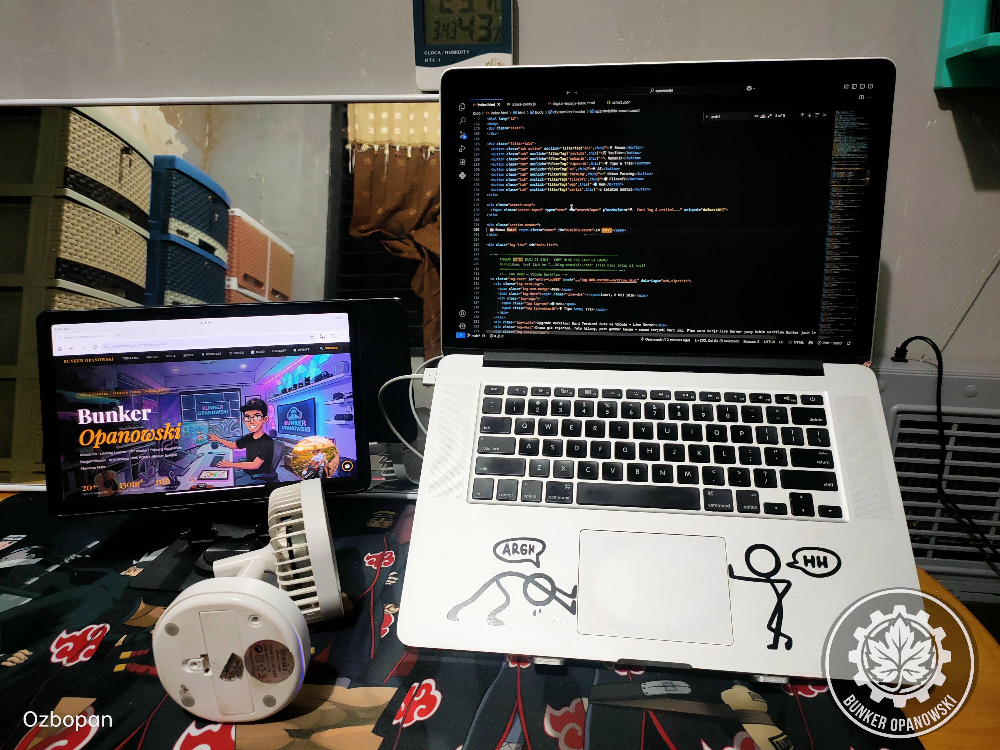

Halo bray! Banyak yang bilang ngoding Python atau web development jaman sekarang di MacBook Pro 2015 itu udah engap. Ketinggalan jaman. Mending ganti yang baru.
Tapi di Bunker Opanowski, mesin 15-inch ini masih santai diajak tempur — buka puluhan tab Firefox, VSCode, sampe Live Server barengan — tanpa drama throttling atau kipas yang bunyi kayak pesawat mau take off. Rahasianya? SOP Perawatan Ekstra.
Ini bukan soal gengsi pake hardware jadul. Ini soal ngerti cara ngerawatnya. Dan hari ini gw bongkar semua ritualnya.

"Oke, ini yang udah lama pengen gw tulis. Ritual yang tiap hari gw jalanin tapi belum pernah gw dokumentasiin — sampai sekarang."
1. Prosedur "Life Support" Fisik
Sebelum nyalain laptop, ada 3 hal fisik yang wajib on dulu. Ini bukan opsional — ini harga mati.
Sirkulasi udara bawah itu kunci utama. Jangan biarin bodi aluminium nempel meja langsung — ntar jadi oven. Laptop stand kasih jarak yang cukup buat si Mac bisa "napas" lewat engsel dan bodi bawah. Investasi murah, dampaknya signifikan banget ke suhu idle.
Bantuan angin dari samping pake kipas mini portable berbaterai 18650. Kuncinya: baterai 18650 harus dicas terpisah, biar nggak nyedot daya laptop. Ini booster ringan yang kerjaannya jaga suhu bodi aluminium tetap adem, terutama pas sesi marathon 10+ jam.
Biar performa Quad-Core tetep di puncaknya — clockspeed nggak turun ke mode hemat — charger wajib nempel terus dari pagi sampai malam. Begitu laptop pake baterai, macOS otomatis throttle performa. Nggak mau itu terjadi di tengah sesi kerja.

"Pernah sekali sok nekat pake baterai doang waktu lagi rendering. Clockspeed langsung drop, semua lambat. Nyesel. Gak pernah lagi seumur hidup."

2. Kendali Sistem: The Hacker Way
Sistem otomatis macOS kadang telat mikir soal manajemen suhu. Di sinilah kita ambil alih kendali secara manual.

"68°C stabil di tengah sesi 15 jam. Bukan keberuntungan — ini hasil ritual yang dijalanin bener dari awal. Ini yang namanya beres."
3. Early Warning System: Indikator Dinding
Ini yang paling underrated tapi paling penting. Indikator suhu ruangan yang nempel di dinding — bukan cuma buat si Mac, tapi buat manusianya juga.
Kalau suhu ruangan tembus 30°C, itu tanda bahaya level 1. Mac mungkin masih kuat dengan SOP ini, tapi orangnya yang nggak aman — gerah, konsentrasi buyar, produktivitas anjlok. Solusinya: es kopi, nyalain AC, atau nunggu hujan turun buat dapet suhu idaman 26°C.

"Jam 3 sore suhu kamar nembus 31°C. Si Mac? Masih adem. Gw yang udah lemes duluan. Nunggu hujan sambil stok es kopi — itu solusi paling realistis."
4. Ritual Lengkap: Checklist Sebelum Tempur

"Semua ceklis ijo. Kopi udah di tangan. Baru boleh buka VSCode dan mulai ketik baris pertama."
📌 Kesimpulan
Dengan ritual 4 wajib ini — Stand, Kipas Eksternal, Power Non-Stop, dan Fan Control Manual — MacBook Pro 15" 2015 tetap jadi mesin tempur paling nyaman di Jaktim. Bukan soal speknya, tapi soal cara ngerawatnya.
Laptop jadul yang dirawat dengan SOP yang bener bisa outperform laptop baru yang dipake sembarangan. Dan di Bunker Opanowski, filosofi ini berlaku buat semuanya — dari Mac sampai tanaman organik di kebun.
Yang penting: paham cara kerjanya, paham batasnya, dan paham cara jaga kondisinya. Sisanya tinggal eksekusi.
Tetap autodidak, tetap berkah! 🔧Setup lo mirip atau lebih ekstrem dari ini? Share ke yang masih setia sama hardware jadul 🔧